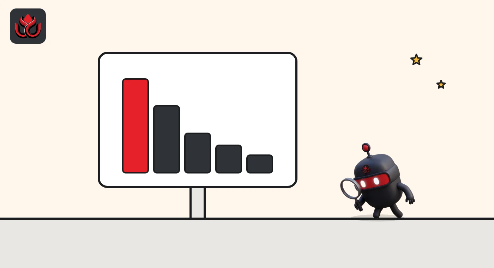
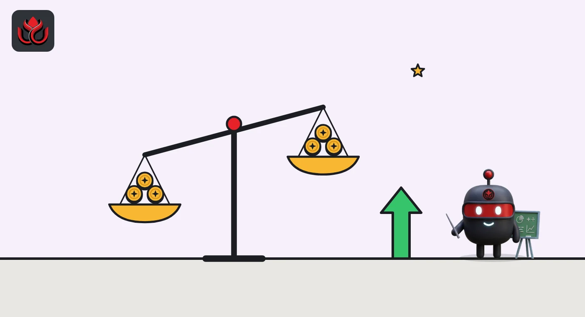

bStocks, a Binance affiliate's stock tokens, jumps 53% to $1.31 billion and No. 1
bStocks, issued on BNB Chain by a Binance group affiliate, is now the largest tokenized stock platform. By our math it added more value in 30 days than the whole $3.58 billion market did, because the rest of the market shrank.
Key points
- Tokenized stocks on public blockchains were worth $3.58 billion as of November 1, 2026, up 9.87% in 30 days, per rwa.xyz.
- bStocks, issued by BTech Holdings, a Binance group affiliate, grew 53.35% in 30 days to $1.31 billion and leads all platforms.
- Monthly transfer volume for tokenized stocks fell 88.01% to $10.21 billion even as holders rose 8.89% to 4.57 million.
The market in numbers
bStocks, the stock tokens issued on BNB Chain by Binance group affiliate BTech Holdings, grew 53.35% in 30 days to $1.31 billion, the most of any platform, according to rwa.xyz. The whole market grew far less.
A tokenized stock is a crypto token that tracks a share of a listed company, backed by shares or a claim on shares held by the issuer. On-chain data site rwa.xyz counted 6,671 such tokens worth $3.58 billion as of November 1, 2026, up 9.87% from 30 days earlier. Holders rose 8.89% to 4.57 million, and 2.34 million addresses were active in the month.
Trading activity went the other way. Monthly transfer volume, the value of tokens moved between wallets, fell 88.01% to $10.21 billion. rwa.xyz does not explain the drop, and transfers include moves between a holder's own wallets, so the figure is not the same as trading volume.
Tokenized stocks by platform, total value
US$ million
Source: rwa.xyz, Tokenized Stocks, data as of November 1, 2026.
Who is bStocks?
On its rwa.xyz platform page, bStocks describes its tokens as tokenized securities issued by BTech Holdings Limited, a Binance group affiliate. They are structured as certificates that give holders an interest in securities the issuer holds. All of them live on BNB Chain, the only network listed for the platform.
The platform's value rose 53.35% in 30 days to $1.31 billion, and its holders rose 8.72% to about 1.55 million. Its largest products, per the stocks page, are tokens tracking SpaceX ($171.1 million), Circle Internet Group ($146.1 million) and Alphabet ($104.5 million).
rwa.xyz's stocks league table counted 104 bStocks tokens as of November 1, and the bStocks platform page showed an RWA count of 105 on November 2.

One platform did more than the whole market
Working backward from the 30-day changes, bStocks was worth about $854 million a month ago, so it added roughly $456 million. The whole tokenized stock market was worth about $3.26 billion, so it added roughly $322 million. That means the rest of the market, taken together, shrank by about $134 million.
Much of that drop came from one token. Securitize's own share token, SECZ, is still the single largest tokenized stock at $202.2 million, but its value fell 39.86% in 30 days and its price per token fell 41.80% to $7.56. That implies a loss of about $134 million in a month. SECZ launched on July 1, 2026, runs on Avalanche and Solana, and had just 88 holders.
The other big platforms
Ondo is second in stocks at $909.4 million. Across all of its products, including Treasury tokens, Ondo's platform page shows $4.05 billion, up 4.09% in 30 days, with 564,621 holders, as of November 2.
xStocks, which issues tokens tracking assets such as the S&P 500, Tesla and Apple on Solana, Ethereum and other chains, shows $625.06 million in total value, up 2.33%. Its holders grew faster, up 14.07% to 820,166.
Rules are moving too. In September the SEC said it would let tokenized stocks trade in DeFi-style pools for five years, as LC Insight reported.
The smaller platforms show how spread out the market still is. Securitize holds $259.0 million across just 15 stock tokens, and most of that is its own SECZ share token. Reality lists 3,237 tokens, more than any other platform, but holds only $161.1 million, an average of about $50,000 per token. Among single assets, a Strategy-linked xStocks token, STRCx, listed as "Strategy PP Variable xStock," held $129.1 million.

LC Insight analysis
This section is our reading of the facts above, not a statement of fact.
- We think distribution is winning over product count. Reality lists 3,237 tokens and holds $161 million. bStocks lists about a hundred and holds $1.3 billion, likely helped by its link to the largest crypto exchange.
- Concentration risk is rising. One issuer tied to one exchange group, on one chain, now holds over a third of the market. Holders depend on that issuer's custody of the underlying shares, not just on the token.
- The 88% fall in transfer volume while holders grew suggests buyers are holding rather than trading. One month of data is not a trend, and we will check whether volume recovers in November.
What's next
- Whether bStocks keeps growing at this pace in November
- Disclosures from BTech Holdings on custody of the underlying shares
- Whether SECZ's slide continues
- Monthly transfer volume for tokenized stocks
Disclaimer. This article is based on public information and the sources listed below as of the update time shown. It is for information only and is not investment, legal or tax advice. Figures may change as companies and authorities publish new data.